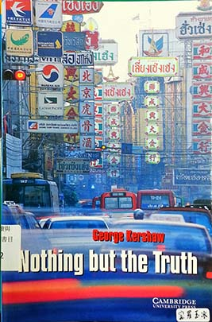

<html lang="en"></html><head><meta charset="UTF-8"/><title>EEweb</title><link rel="stylesheet" type="text/css" href="./semantic-ui/semantic.css"/><link rel="stylesheet" type="text/css" href="./asset/stylesheets/reset.css"/></head><body><div id="navbar" class="ui stackable menu container"><a href="./home.html" class="active item">EEWEB</a><a href="./home.html" class="item"><i class="home icon"></i>HOME</a><a href="./intro.html" class="item"><i class="empty star icon"></i>INTRO</a><a href="./library.html" class="item"><i class="book icon"></i>LIBRARY</a><a href="./record.html" class="item"><i class="history icon"></i>RECORDS</a></div><br/><div class="ui container"><div class="ui four stackable cards"><div class="card red"><div class="content"><div class="header">Dead man's Money</div></div><a class="image"></a><div class="content"><div class="meta"><span class="right floated time">架上有書</span><span class="category">Oxford 系列 / OS-2</span></div></div><div class="ui bottom attached button"><i class="print icon"></i>      列印借書單</div></div><div class="card red"><div class="content"><div class="header">The Caribbean File</div></div><a class="image"></a><div class="content"><div class="meta"><span class="right floated time">架上有書</span><span class="category">Cambridge 系列 / C1-1</span></div></div><div class="ui bottom attached button"><i class="print icon"></i>      列印借書單</div></div><div class="card red"><div class="content"><div class="header">Blood Diamonds</div></div><a class="image"></a><div class="content"><div class="meta"><span class="right floated time">架上有書</span><span class="category">Cambridge 系列 / C1-2</span></div></div><div class="ui bottom attached button"><i class="print icon"></i>      列印借書單</div></div><div class="card red"><div class="content"><div class="header">One Day</div></div><a class="image"></a><div class="content"><div class="meta"><span class="right floated time">架上有書</span><span class="category">Cambridge 系列 / C2-1</span></div></div><div class="ui bottom attached button"><i class="print icon"></i>      列印借書單</div></div><div class="card red"><div class="content"><div class="header">Dead Cold</div></div><a class="image"></a><div class="content"><div class="meta"><span class="right floated time">架上有書</span><span class="category">Cambridge 系列 / C2-2</span></div></div><div class="ui bottom attached button"><i class="print icon"></i>      列印借書單</div></div><div class="card red"><div class="content"><div class="header">Within High Fences</div></div><a class="image"></a><div class="content"><div class="meta"><span class="right floated time">架上有書</span><span class="category">Cambridge 系列 / C2-3</span></div></div><div class="ui bottom attached button"><i class="print icon"></i>      列印借書單</div></div><div class="card red"><div class="content"><div class="header">Jojo’s Story</div></div><a class="image"></a><div class="content"><div class="meta"><span class="right floated time">架上有書</span><span class="category">Cambridge 系列 / C2-4</span></div></div><div class="ui bottom attached button"><i class="print icon"></i>      列印借書單</div></div><div class="card red"><div class="content"><div class="header">Two Worlds</div></div><a class="image"></a><div class="content"><div class="meta"><span class="right floated time">架上有書</span><span class="category">Cambridge 系列 / C4-1</span></div></div><div class="ui bottom attached button"><i class="print icon"></i>      列印借書單</div></div><div class="card red"><div class="content"><div class="header">Nothing but the Truth</div></div><a class="image"></a><div class="content"><div class="meta"><span class="right floated time">架上有書</span><span class="category">Cambridge 系列 / C4-2</span></div></div><div class="ui bottom attached button"><i class="print icon"></i>      列印借書單</div></div><div class="card red"><div class="content"><div class="header">Death in the Dojo</div></div><a class="image"></a><div class="content"><div class="meta"><span class="right floated time">架上有書</span><span class="category">Cambridge 系列 / C5-1</span></div></div><div class="ui bottom attached button"><i class="print icon"></i>      列印借書單</div></div><div class="card red"><div class="content"><div class="header">Dragon’s Eggs</div></div><a class="image"></a><div class="content"><div class="meta"><span class="right floated time">架上有書</span><span class="category">Cambridge 系列 / C5-2</span></div></div><div class="ui bottom attached button"><i class="print icon"></i>      列印借書單</div></div><div class="card red"><div class="content"><div class="header">A Love for Life</div></div><a class="image"></a><div class="content"><div class="meta"><span class="right floated time">架上有書</span><span class="category">Cambridge 系列 / C6-1</span></div></div><div class="ui bottom attached button"><i class="print icon"></i>      列印借書單</div></div><div class="card red"><div class="content"><div class="header">The Best of Times?</div></div><a class="image"></a><div class="content"><div class="meta"><span class="right floated time">架上有書</span><span class="category">Cambridge 系列 / C6-2</span></div></div><div class="ui bottom attached button"><i class="print icon"></i>      列印借書單</div></div><div class="card red"><div class="content"><div class="header">Frozen Pizza and Other Slices of Life</div></div><a class="image"></a><div class="content"><div class="meta"><span class="right floated time">架上有書</span><span class="category">Cambridge 系列 / C6-3</span></div></div><div class="ui bottom attached button"><i class="print icon"></i>      列印借書單</div></div><div class="card red"><div class="content"><div class="header">Solo Saxophone</div></div><a class="image"></a><div class="content"><div class="meta"><span class="right floated time">架上有書</span><span class="category">Cambridge 系列 / C6-4</span></div></div><div class="ui bottom attached button"><i class="print icon"></i>      列印借書單</div></div><div class="card red"><div class="content"><div class="header">Nelson’s Dream</div></div><a class="image"></a><div class="content"><div class="meta"><span class="right floated time">架上有書</span><span class="category">Cambridge 系列 / C6-5</span></div></div><div class="ui bottom attached button"><i class="print icon"></i>      列印借書單</div></div><div class="card red"><div class="content"><div class="header">Who Was Rosa Parks?</div></div><a class="image"></a><div class="content"><div class="meta"><span class="right floated time">架上有書</span><span class="category">Grosset &amp; Dunlap 系列 / G1</span></div></div><div class="ui bottom attached button"><i class="print icon"></i>      列印借書單</div></div><div class="card red"><div class="content"><div class="header">Who Is Bill Gates?</div></div><a class="image"></a><div class="content"><div class="meta"><span class="right floated time">架上有書</span><span class="category">Grosset &amp; Dunlap 系列 / G7</span></div></div><div class="ui bottom attached button"><i class="print icon"></i>      列印借書單</div></div><div class="card red"><div class="content"><div class="header">Who Was Jesus?</div></div><a class="image"></a><div class="content"><div class="meta"><span class="right floated time">架上有書</span><span class="category">Grosset &amp; Dunlap 系列 / G8</span></div></div><div class="ui bottom attached button"><i class="print icon"></i>      列印借書單</div></div><div class="card red"><div class="content"><div class="header">Who Was John F. Kennedy?</div></div><a class="image"></a><div class="content"><div class="meta"><span class="right floated time">架上有書</span><span class="category">Grosset &amp; Dunlap 系列 / G9</span></div></div><div class="ui bottom attached button"><i class="print icon"></i>      列印借書單</div></div><div class="card red"><div class="content"><div class="header">Who Was Abraham Lincoln?</div></div><a class="image"></a><div class="content"><div class="meta"><span class="right floated time">架上有書</span><span class="category">Grosset &amp; Dunlap 系列 / G10</span></div></div><div class="ui bottom attached button"><i class="print icon"></i>      列印借書單</div></div><div class="card red"><div class="content"><div class="header">Who Was Franklin Roosevelt?</div></div><a class="image"></a><div class="content"><div class="meta"><span class="right floated time">架上有書</span><span class="category">Grosset &amp; Dunlap 系列 / G11</span></div></div><div class="ui bottom attached button"><i class="print icon"></i>      列印借書單</div></div><div class="card red"><div class="content"><div class="header">The Promise of A Pencil</div></div><a class="image"></a><div class="content"><div class="meta"><span class="right floated time">架上有書</span><span class="category">Scribner 系列 / S1</span></div></div><div class="ui bottom attached button"><i class="print icon"></i>      列印借書單</div></div><div class="card red"><div class="content"><div class="header">各國眼中的世界:現在就翻新你的國際觀!</div></div><a class="image"></a><div class="content"><div class="meta"><span class="right floated time">架上有書</span><span class="category">中文書系列 / M1</span></div></div><div class="ui bottom attached button"><i class="print icon"></i>      列印借書單</div></div><div class="card red"><div class="content"><div class="header">CQ文化智商</div></div><a class="image"></a><div class="content"><div class="meta"><span class="right floated time">架上有書</span><span class="category">中文書系列 / M2</span></div></div><div class="ui bottom attached button"><i class="print icon"></i>      列印借書單</div></div><div class="card red"><div class="content"><div class="header">國際觀的第一本書</div></div><a class="image"></a><div class="content"><div class="meta"><span class="right floated time">架上有書</span><span class="category">中文書系列 / M3</span></div></div><div class="ui bottom attached button"><i class="print icon"></i>      列印借書單</div></div><div class="card red"><div class="content"><div class="header">跟TED學表達，讓世界記住你</div></div><a class="image"></a><div class="content"><div class="meta"><span class="right floated time">架上有書</span><span class="category">中文書系列 / M4</span></div></div><div class="ui bottom attached button"><i class="print icon"></i>      列印借書單</div></div><div class="card red"><div class="content"><div class="header">被隱藏的中國:從新疆、西藏、雲南到滿洲的奇異旅程</div></div><a class="image"></a><div class="content"><div class="meta"><span class="right floated time">架上有書</span><span class="category">中文書系列 / M10</span></div></div><div class="ui bottom attached button"><i class="print icon"></i>      列印借書單</div></div><div class="card red"><div class="content"><div class="header">追風箏的孩子</div></div><a class="image"></a><div class="content"><div class="meta"><span class="right floated time">架上有書</span><span class="category">中文書系列 / M11</span></div></div><div class="ui bottom attached button"><i class="print icon"></i>      列印借書單</div></div></div></div><script src="https://code.jquery.com/jquery-2.1.4.min.js"></script><script src="./semantic-ui/semantic.js"></script><script src="http://cdnjs.cloudflare.com/ajax/libs/jquery.form/3.51/jquery.form.min.js"></script></body>